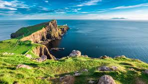

Discover the Magic of Scotland
|  | Scotland has beautiful landscapes, it has rich history and a vibrant culture. From the rugged peaks of the Highlands to the serene shores of its lochs, every corner of Scotland is a masterpiece of nature. You can find old castles perched atop dramatic cliffs. In Edinburgh, there is a majestic castle overlooking the cobbled streets of the city. Nature lovers can visit the Isle of skye, located northwest of Scotland, with its breathtaking landscapes and stunning scenery. And for the adventurers, they can try to go to the legendary Loch Ness and get a glimpse of Nessie. The Scotish people are warm and welcoming. You can enjoy listening to traditional scotland Highland folk music, while siping on Scotch whisky. |
A video of Scotland